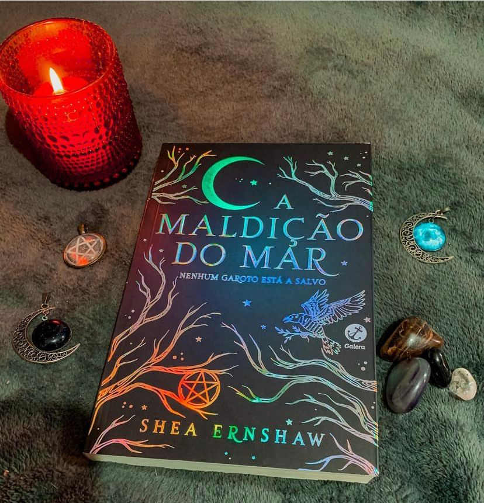

A Maldição do Mar
(Shea Ernshaw - Galera)
⭐⭐⭐⭐
“Mas a magia não é sempre linear. Ela nasce do ódio. Do amor. Da vingança.”
Quando corpos de garotos começam a aparecer no litoral da cidade de Sparrow, alguns moradores se perguntam se a antiga lenda sobre as bruxas vingativas seria verdade. Mas até onde essa caça às bruxas pode levar?
Em A maldição do mar temos um livro de fantasia repleto de lendas. Há dois séculos três irmãs foram condenadas à morte, supostamente por serem bruxas. Ela foram afogadas e agora a cada primeiro de junho até solstício de verão, reza a lenda que as irmãs voltam se apossando do corpo de três jovens para conseguir vingança.
A primeira coisa que quero ressaltar é a capa belíssima do livro, foi o que me atraiu de cara e me fez adquirir a obra sem saber do que se trata. Também quero dizer que livros de fantasia não fazem mais mu estilo de leitura porém, o livro é muito bom e te prende do início ao fim. Com uma narrativa fluida, leve e fácil de ser lida o tempo passa e a gente nem se dá conta. Os pontos fortes são a mitologia, a mistura da narração de Penny, no presente, e uma narrativa em terceira pessoa que nos apresenta as próprias irmãs Swan. O mistério foi todo amarrado sem pontas soltas.
O que eu não gostei muito foi o clichê adolescente e eles venderam a ideia de que o livro seria uma espécie de “Abracadabra” e “Da magia a sedução” e eu não consegui ver semelhanças suficientes para que a gente lembre desses filmes. Mas no geral é um ótimo livro e vale a pena.